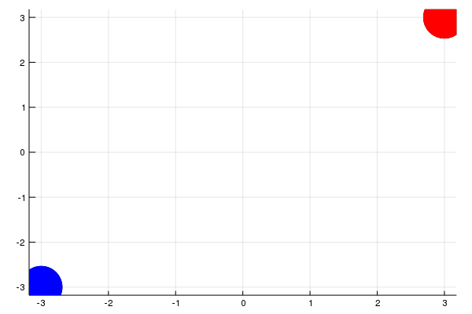
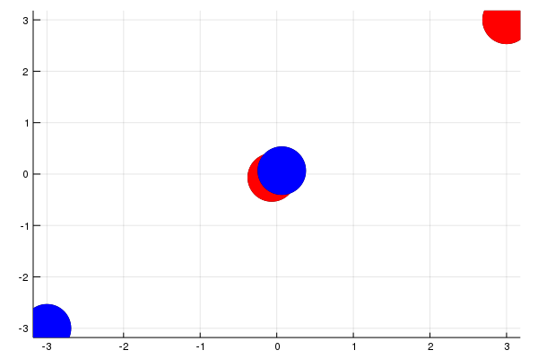
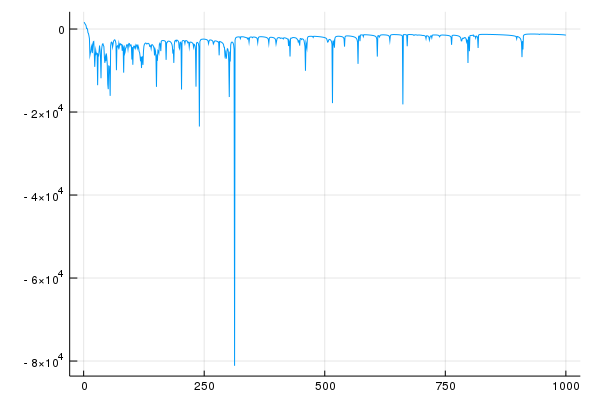

Simulating the Motion of Charged Bodies
“We demand rigidly defined areas of doubt and uncertainty!” – Douglas Adams, The Hitchhiker's Guide To The Galaxy
What do charges like doing?
The answer is quite simple: like charges like to move apart and unlike charges like to move closer. If I were to place a 100 charges in a circle of radius 5cm and tell them to do their thing they would contentedly move around so that they attain the most stable state – where the total potential energy of the system is minimum. The problem is that even though charges know what their purpose is in life, and we know more or less what they’d tend to do, it’s quite difficult to predict their exact movements. Most of us can predict the movement of 3 or 4 charged bodies, but when it comes to accounting for the interactions of a 100 charges, the teachings of H.C. Verma and Resnick Halliday aren’t enough to help us.
The Main Idea
What is the objective of my system of 100 charges? To minimise the total value of this potential energy. (Coincidentally this is the objective of the entire universe as well) What is the objective of a typical machine learning model? To minimise the total cost/loss. Hmm…
I’m going to see if I can predict the behaviour of a system of a 100 charges by differentiating the total potential energy and performing gradient descent on the x and y coordinates of each charge. What should happen is that the x and y coordinates start changing themselves to minimise the total potential energy. Therefore, the charges start moving to minimise the total potential energy, mimicking what would happen in the real world.
The Obvious Approach vs My Approach
The Obvious Approach
The solution to this problem that immediately comes to mind is to use the amazing computing power we possess to resolve the vector components of the 99 forces on each of the 100 charges we have, use that net force to predict the acceleration of the charges, use that acceleration to produce movement in the charges, and repeat the process within a very short time interval to produce as continuous and as accurate a movement as possible.
My Approach
Why do charges move? Due to acceleration. Where does acceleration come from? Force. Why is force applied? To lower potential energy. Therefore, it’s potential energy that’s really pulling the strings. What I’ve done is cut out the middleman that is force. I’ve changed my objective from simulating the effect that force has on charged bodies to directly simulating the effect that potential energy has on it. (This may seem like the same thing, and the fact that it does is why I can do it) The main advantage to doing so is that potential energy is a scalar quantity whereas force is a vector. Calculating the net potential energy of a system of 100 charges is a lot easier than calculating the net force on each charge in a 100-charge system.
The Science Part of It
Let’s look at our classic formula to calculate potential energy
\[U = \frac{1}{4 \pi \epsilon_0}\frac{q_1q_2}{r}\]It quantifies the potential energy \(U\) of a system of two point-charges with magnitudes q1 and q2, separated by a distance r in free space (vacuum).
If we want the total potential energy of a system of \(n\) charges, we just apply this formula \(^nC_2\) times.
Let's Begin
I’m going to create a system of 100 charged bodies and initialise them with random charge values. I’m sampling from a Gaussian Distribution since I’d like there to be a few slightly larger charges in the mix to make things interesting.
struct Vertex # represents the charged body
charge::Float64
pos::Vector{Float64} # x,y coordinates
end
# Create the req no. of charges with random positions and amplitudes
function create_env(no_ch)
[Vertex(randn(), rand(-5:0.001:5, 2)) for _ in 1:no_ch]
endI’m also going to place these charges randomly in a circle of radius 5cm centred at the origin.
Later on, I’ll make sure that these charges never leave this circle. Why is this important? If I happen to get a couple of large charges with the same sign and these charges were allowed to go anywhere they wanted to, they would simply move apart to infinity, dragging all the smaller charges with them, and we wouldn’t get to see much.
I’m also going to create a simple function to calculate potential.
function potential(a::Vertex, b::Vertex) # classic potential formula
return (8.9e9)*a.charge*b.charge/(sqrt(sum(abs2.(a.pos .- b.pos))))
end
function potential(a::Vector) # potential for a system of charges
pot = 0
for i in 1:length(a) # nC2
for j in i+1:length(a)
pot = pot+potential(a[i],a[j])
end
end
return pot
endNow I’m going to define my loss function. Why can’t I just use my potential function? The reason is that I want to constrain my charges to a circle. The way I do that is by applying a high penalty(loss) every time a charge tries to move out of the circle.
function loss(env::Vector)
s = 0
for i in 1: length(env)
# if charge moves outside circle of radius 5 centred at origin,
# give it a high penalty
# this is to constrain it otherwise large like charges would
# just go to infinity and we wouldn't see much
if distance(env[i], [0,0])-5>0
s = s+100*(distance(env[i],[0,0])-5)
end
end
# scaling potential so the distance moved is acceptably small
l = s + 1.0e-9*potential(env)
return l
endSince the potential function gives a very high value of the order of 10<sup>9</sup> we need to scale it so that the loss is a low enough value to produce an acceptable movement in my charges.
Let’s create the environment of charges
env = create_env(100)I’m using 2 main machine learning libraries. Zygote, for its AD capabilities, and Flux, for its optimisers.
using Zygote
using FluxLet’s start moving these charges around
opt = ADAM(0.01)
for i in 1:200
gs = Zygote.gradient(loss, env)
for j in 1: length(gs[1]) # each j is a charge
# making sure we update only the positions not the charge value
Flux.Optimise.update!(opt, env[j].pos, gs[1][j].pos)
end
endUsing some basic plotting functions, I graphed my charges at every training iteration and put them all together in a gif.

Red charges are positive, Blue charges are negative and size of the dot is proportional to the absolute value of charge.
The Big Question. It looks cool, but does it work?
A high-level observation shows that the like charges tend to move apart and the unlike charges tend to move closer. We can take a step further and notice that as time progresses, the charges tend to move less and less since they are more or less in a stable position. A sure sign of convergence.
Let’s prove this.
Let’s take a trivial case and define a system of two charges: one positive and one negative. Let’s place them diametrically opposite with respect to the origin.

What do we expect to happen? The charges should move together.

And they do!
(What’s interesting is that they seem to have overshot and actually crossed each other at one point, only to get drawn to each other once more. An apt parallel is charges overshooting due to inertia of motion)
Let’s go back to that system of 100 charges and plot the potential energy at every training iteration. 
It’s safe to say that the system has converged at a value of approximately -1360 .
You’re probably wondering why the graph is so bumpy and what these extreme minimas are. The minimas are simply the points in the training loop when the charges got a bit overconfident and tried to escape the constraining circle. They are then immediately brought back to valid positions by the loss function. They may also occur when a positive and a negative charge briefly overlap with each other giving a potential of negative infinity. Of course, such a situation is impossible in the real world.
Conclusion
It works! I created this simulation because it’s an interesting and very visual way to get a real feel of how charges move around when affected by almost a 100 different forces. It also shows how it’s possible to solve a problem more easily by reframing the question being asked. ~~Simulate the effect of force on charged bodies?~~ Simulate the effect of potential energy on charged bodies? Most of all it shows the power of gradient descent in solving a problem that would be unwieldy to solve using classic approaches.